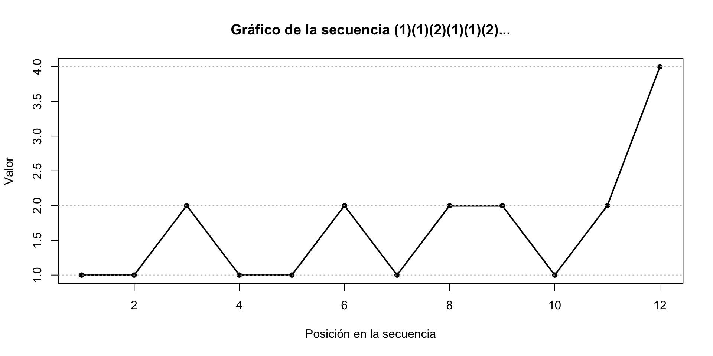
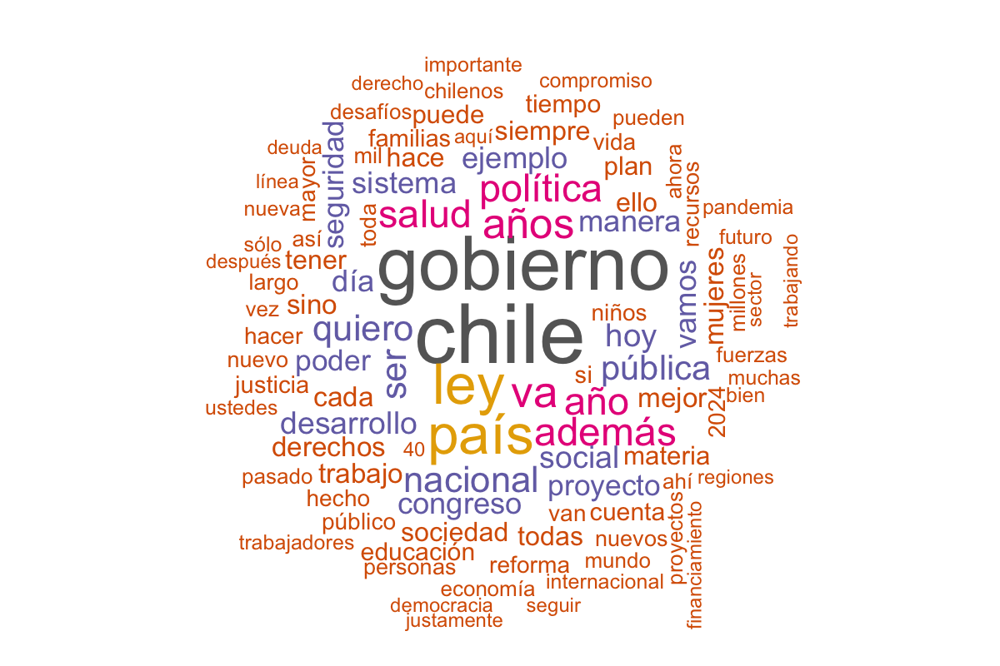
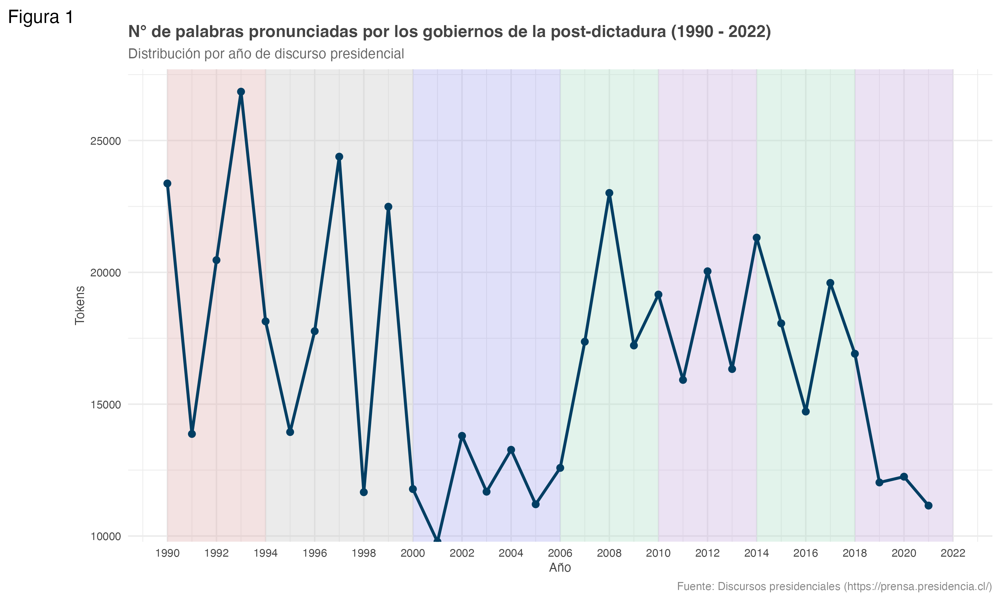
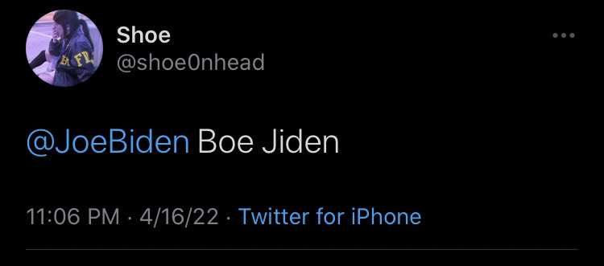
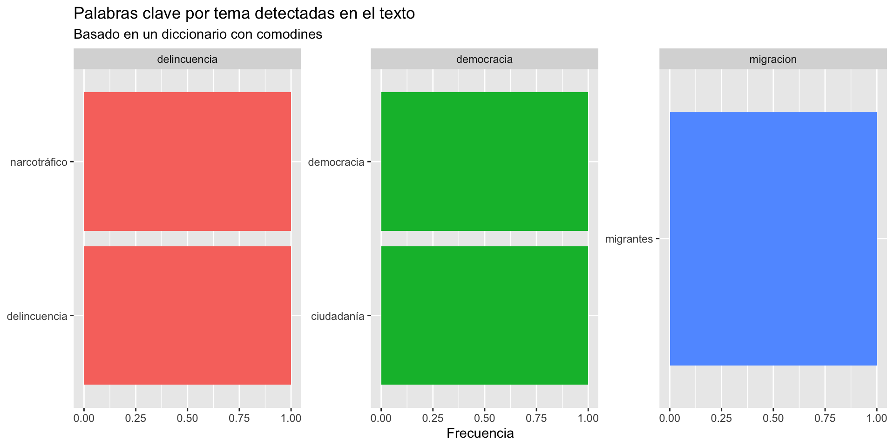

Análisis cuantitativo del texto
Seminario: InteRculturales
Matías Deneken
May 22, 2025
¿Qué veremos hoy?
- ¿Cómo hacer cosas con las palabras?
- La minería de texto: Desafío de las Ciencias Sociales Computacionales
- Conceptos claves
- Uso y práctica en el software R
- Palabras en su contexto
- Paquete Quanteda
- Tidytext
- Preguntas empíricas
Resultados esperados
Nube de las palabras 🥱

Tendencias de palabras

¿Cómo hacer cosas con las palabras?
Pues bien; si a un cervantista se le ocurriera decir: el Quijote empieza con dos palabras monosilábicas terminadas en n: (en y un), y sigue con una de cinco letras (lugar), con dos de dos letras (de la), con una de cinco o de seis (Mancha), y luego se le ocurriera derivar conclusiones de eso, inmediatamente se pensaría que está loco. La Biblia ha sido estudiada de ese modo.Jorge Luis Borges en "La Cábala". Conferencias denominadas Siete Noches¿Cómo hacer cosas con la palabras?
¿Y lo podremos hacer?
En un lugar de la Mancha, de cuyo nombre no quiero acordarme.
(1) (1) (2) (1) (1) (2) (1) (2) (2) (1) (2) (4)
Cómo hacer cosas con la palabras.
Denotación y la connotación
Palabras y sus efectos


Ciencias Sociales Computacionales: Text Mining
Las Ciencias Sociales Computacionales integran herramientas de la computación con preguntas sustantivas de las ciencias sociales. En este cruce, el text mining (minería de texto) permite analizar grandes volúmenes de texto —como discursos, noticias o redes sociales— para identificar patrones, temas, emociones o relaciones entre actores.
Más que contar palabras, se trata de convertir texto en datos estructurados que permitan nuevas formas de interpretar lo social.
Esta metodología abre nuevas posibilidades para:
- Explorar tendencias discursivas en el tiempo.
- Identificar marcos ideológicos y emociones dominantes.
- Analizar cómo ciertos conceptos (como desigualdad, democracia, identidad) aparecen y se transforman en distintos contextos.
Ciencias Sociales Computacionales: Text Mining
El Procesamiento de Lenguaje Natural (en inglés, Natural Language Processing, NLP) es un campo interdisciplinario entre lingüística, ciencia computacional e inteligencia artificial, que busca desarrollar métodos para que las máquinas puedan leer, interpretar, generar y analizar lenguaje humano (oral o escrito).
Incluye tareas como:
Tokenización: dividir el texto en palabras, frases o unidades mínimas.
Lematización/Stemming: reducir palabras a su forma base (“corriendo” → “correr”).
Análisis sintáctico y semántico: entender la estructura gramatical o el significado del texto.
Extracción de entidades (personas, lugares, organizaciones).
Clasificación de sentimientos, detección de tópicos, generación de texto, etc.
Ciencias Sociales Computacionales: Text Mining
Algunos ejemplos de técnicas.
Modelos de tópicos (LDA) → para identificar temas latentes en discursos.
Análisis de sentimiento → para mapear emociones o polarización.
Redes semánticas → para ver cómo se asocian conceptos o actores.
Clasificadores supervisados → para categorizar tweets, artículos o comentarios por tipo, ideología, tono, etc.
Ciencias Sociales Computacionales: Text Mining
¿Cómo ha cambiado la forma en que los presidentes de Chile hablan sobre la desigualdad entre 1990 y 2021?
- 📄 Corpus: Discursos anuales de la Cuenta Pública (1990–2021)
- 🔍 Filtro por concepto: Palabras como
desigual*,brecha*,inequidad,estratificación
- 📊 Conteo por año: Número de menciones por discurso
- 📈 Visualización: Gráfico de línea para mostrar evolución
¿Por qué es útil?
- Convierte texto cualitativo en datos analizables
- Permite comparaciones temporales y temáticas
- Une teoría social y herramientas computacionales
Fundamento en R
🧰 Paquetes esenciales
- 📦
quanteda- Corpus estructurados (
corpus(),tokens(),dfm()) - Análisis por diccionario (
dictionary(),dfm_lookup()) - KWIC y análisis de contexto (
kwic())
- Corpus estructurados (
- 📦
tidytext- Integración con
dplyrpara limpieza y visualización - Compatible con enfoques Tidy:
count(),mutate(),group_by()
- Integración con
🗂️ Uso de diccionarios
- Permite agrupar palabras en categorías temáticas
- Se pueden usar para:
- Filtrar palabras por tema o emoción
- Medir frecuencia relativa o presencia/ausencia
Conceptos y funciones fundamentales
Conceptos y funciones fundamentales
🧱 Token
Un token es una unidad mínima de análisis, usualmente una palabra. Tokenizar un texto significa dividirlo en esas unidades.
🔡 DFM (Document-Feature Matrix)
Una DFM es una matriz donde cada fila representa un documento y cada columna una palabra única (token). El valor es la frecuencia.
Document-feature matrix of: 1 document, 27 features (0.00% sparse) and 0 docvars.
features
docs desde 1990 chile es una democracia representativa y libre .
text1 1 1 3 2 1 1 1 1 1 1
[ reached max_nfeat ... 17 more features ]"chile"aparece 2 veces"es"aparece 2 vecesLas demás palabras (
una,democracia,representativa,y,libre,".") aparecen una vez cada unaEl punto
"."fue considerado como un token separado (esto ocurre si no se removió la puntuación al crear los tokens)
🔡 DFM (Document-Feature Matrix): Remove punct
tokens_reducidos <- tokens(corp, remove_punct = TRUE) %>%
tokens_tolower() %>% # pasar a minúsculas
tokens_wordstem(language = "spanish") # aplicar stemming
tokens_reducidosTokens consisting of 1 document.
text1 :
[1] "desd" "1990" "chil" "es" "una" "democraci"
[7] "represent" "y" "chil" "es" "libr" "a"
[ ... and 19 more ]Sobre los bigramas
library(tidytext)
library(tibble)
bigrama <- tibble(text = texto) %>%
unnest_tokens(bigrama, text, token = "ngrams", n = 2)
bigrama# A tibble: 30 × 1
bigrama
<chr>
1 desde 1990
2 1990 chile
3 chile es
4 es una
5 una democracia
6 democracia representativa
7 representativa y
8 y chile
9 chile es
10 es libre
# ℹ 20 more rowsKWIC y Stemming
🔍 KWIC (Key Word in Context)
Muestra las palabras inmediatamente antes y después de una palabra clave. Es útil para analizar el contexto semántico.
Ruido de palabras
🚫 ¿Qué es una Stop Word?
Son palabras muy frecuentes (como “el”, “de”, “y”, “es”) que usualmente no aportan significado sustantivo al análisis textual.
🧠 ¿Por qué eliminarlas?
- Aparecen en casi todos los textos → ruido analítico
- No discriminan entre temas ni emociones
- Permite centrarse en contenido más relevante (sustantivos, verbos clave)
library(quanteda)
tokens_limpios <-tokens(texto,
remove_punct = TRUE) %>% # Elimina puntos, comas, etc.
tokens_tolower() %>% # Convierte a minúsculas
tokens_remove(pattern = stopwords("spanish")) # Elimina stop words en español
tokens_limpiosTokens consisting of 1 document.
text1 :
[1] "1990" "chile" "democracia" "representativa"
[5] "chile" "libre" "largo" "historia"
[9] "chile" "destacó" "estabilibidad" "democrática"
[ ... and 3 more ]☁️ Nube de palabras desde texto limpio
Eliminamos puntuación y stop words para visualizar solo las palabras relevantes.
library(quanteda.textplots)
# Texto más largo
texto <- "Chile es una democracia representativa. El país enfrenta desigualdades, pero también oportunidades. La educación, la salud y el trabajo son temas prioritarios para Chile."
# Limpiar y procesar
tokens_limpios <- tokens(texto,
remove_punct = TRUE) %>%
tokens_tolower() %>%
tokens_remove(pattern = stopwords("spanish"))Crear dfm (document-feature matrix)
Document-feature matrix of: 1 document, 12 features (0.00% sparse) and 0 docvars.
features
docs chile democracia representativa país enfrenta desigualdades
text1 2 1 1 1 1 1
features
docs oportunidades educación salud trabajo
text1 1 1 1 1
[ reached max_nfeat ... 2 more features ]☁️ Nube de palabras desde texto limpio
Visualizar
Diccionarios
Pensemos en un texto.
library(tidytext)
library(stringr)
texto <- "La democracia es fundamental para la participación ciudadana.
Sin embargo, la delincuencia organizada y el narcotráfico han aumentado. Se ha generado un escenario de inseguridad.
La migración también es un desafío que debe abordarse con políticas públicas integradas y garantizar derechos básicos."¿Qué conceptos no pueden parecer interesantes? Definimos palabras previas.
# Texto de ejemplo
texto <- "La democracia es clave. La delincuencia y el narcotráfico afectan la ciudadanía.
Muchos migrantes y refugiados llegaron en 2023."
# Diccionario con comodines
diccionario_temas <- list(
democracia = c("democracia", "participación", "ciudad*", "instituciones", "elecciones", "derecho*"),
delincuencia = c("delincuencia", "crimen", "inseguridad", "violencia", "narco*"),
migracion = c("migra*", "refugiado", "exilio", "inmigración")
)Diccionarios
# Aplicar diccionario con comodines
patrones_democracia <- str_replace_all(diccionario_temas$democracia, "\\*", ".*")
patrones_delincuencia <- str_replace_all(diccionario_temas$delincuencia, "\\*", ".*")
patrones_migracion <- str_replace_all(diccionario_temas$migracion, "\\*", ".*")
tokens_clasificados <- tokens_df %>%
mutate(
tema = case_when(
str_detect(word, regex(paste0("^(", paste(patrones_democracia, collapse = "|"), ")$"), ignore_case = TRUE)) ~ "democracia",
str_detect(word, regex(paste0("^(", paste(patrones_delincuencia, collapse = "|"), ")$"), ignore_case = TRUE)) ~ "delincuencia",
str_detect(word, regex(paste0("^(", paste(patrones_migracion, collapse = "|"), ")$"), ignore_case = TRUE)) ~ "migracion",
TRUE ~ NA_character_
)
) %>%
filter(!is.na(tema)) %>%
count(tema, word, sort = TRUE)# A tibble: 5 × 3
tema word n
<chr> <chr> <int>
1 delincuencia delincuencia 1
2 delincuencia narcotráfico 1
3 democracia ciudadanía 1
4 democracia democracia 1
5 migracion migrantes 1Diccionarios
library(ggplot2)
ggplot(tokens_clasificados, aes(x = reorder_within(word, n, tema), y = n, fill = tema)) +
geom_col(show.legend = FALSE) +
facet_wrap(~ tema, scales = "free_y") +
scale_x_reordered() +
coord_flip() +
labs(
title = "Palabras clave por tema detectadas en el texto",
subtitle = "Basado en un diccionario con comodines",
x = NULL, y = "Frecuencia"
) 
Vamos al código!
Sesión 3: InteRculturales